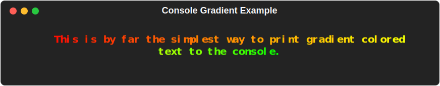
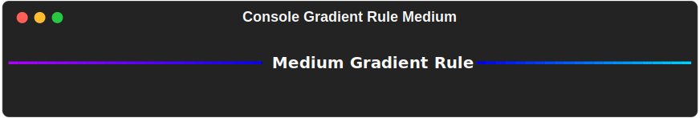

Console¶
MaxGradient.console.Console() is a subclass of rich.console.Console() that adds gradient functionality to the console. Just it can be instantiated in multiple ways:
Directly:
New Methods¶
Console also has two new methods that you can take advantage of in your projects:
First New Method¶
Console.gradient()¶
There's and low level look at MaxGradient.gradient.Gradient's class in the next section. For now, just know that any of the parameters that can be used by MaxGradient.gradient.Gradient() can also be used by console.gradient().
Example¶
console.gradient(
"This is by far the simplest way to print \
gradient colored text to the console.",
colors = [
"red",
"orange",
"yellow",
"green"
],
justify = "center",
style = "bold"
)

Second New Method¶
Console.gradient_rule()¶
Console.gradient_rule() expands on rich.rule.Rule() by allowing you to specify both the colors of the rule's gradient, as well as the rule's thickness.
Examples¶
Gradient Rule¶
from maxgradient.console import Console
console = Console()
console.gradient_rule("Medium Gradient Rule")
